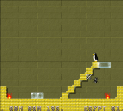
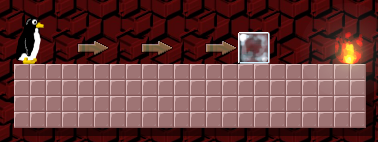
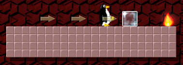
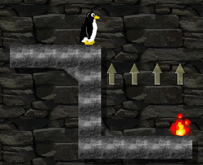
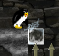
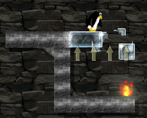
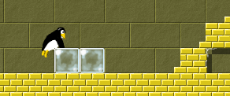
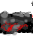

|
 |
This is a fast-paced puzzle game that you can play for five minutes or hours, depending on how much time you have and how much you like it. The objective is to extinguish burning fires using already blocks of ice, either created by the player or the game itself. Although learning the game physics and controls is easy, solving some of the levels is not. |
The game is free (as in freedom of speech), licensed as Public Domain, and it has been developed using all free tools and libraries on free platforms. Enjoy it! (note: the game is also ported to Windows, thanks Claudio!) See link #license for license information.
The objective of the game is to extinguish all bunring fires. You do this by pushing or dropping ice blocks so they collide with the fire using the player.
| Player | |
| Ice block | |
| Fire |
To push an ice block you need only walk towards it, try to walk through it even, the player will kick the ice block once in contact with it and the block will slide until it hits a wall or falls down.


That is how you push/slide an already existing block of ice, but the player can also create and destroy ice blocks. The player is limited to creating and destroying ice blocks below the player left and right sides.



Pushing ice blocks can only be done if the ice block has no obstacles on the other side. Even another ice block will stop an ice block from being pushed.


Once on top of ice blocks you can destroy one of them or jump down on the other side. This climbing behaviour is activated every time you try to push an ice block that is next to another ice block or a solid ledge.
An explanation of falling blocks: unless single ice blocks (or even a row of connected ice blocks) is supported by solids below or connected to solids, it will start to fall until it hits a solid, is destroyed or falls into obvlivion (below screen visibility).
You didn't think all levels would be as easy as the tutorial ones, did you? There are several additional elements to make solving the levels more difficult.
| Spikes |
|
These are nearly invisible, burried into solids. If the player or an ice block is near this trap, spikes will shoot out killing the player or destroying the ice block. |
| Active lava |
|
Active lava will kill the player and destroy ice if touched. |
| Dormant lava |
 |
This type of dormant lava is harmless to both player and ice blocks, but beware: lava can be ignited if a burning fire should happen to touch it, making it active, lethal lava. |
To make things even worse many levels will have moving enemies that will kill the player on touch. Lucky for the player, these enemies can be destroyed by squishing them between an ice block and a solid or another ice block. Depending on the level theme these enemies move and look differently, below are some examples.
| Scarab (from Egypt theme) | |
| Blob (from Space theme) |
|
As you can see, with the additional, very dangerous objects this game can become quite complicated in spite of it's simple physics engine. Many levels will require logic and timing in addition to a heap of intuition. Good luck!
There are several ways to configure Magicor; edit configuration file, add command line options or use the in-game options menu.
| Fullscreen | True for fullscren, false for windowed. |
| Eyecandy | Set to false to disable extra nice graphical effects. |
| Sound | Set to false to disable sound. (if both sound and music are disabled, audio will not be initialized at all) |
| Music | Set to false to disable music. (if both sound and music are disabled, audio will not be initialized at all) |
| Sound vol | Set the sound volume from 0 (silent) to 100 (loud). |
| Music vol | Set the music volume from 0 (silent) to 100 (loud). |
| Joystick | Toggle joystick support. If disabled the joystick will not be initialized at all. |
The in-game options screen will give you the following options:
Fullscreen (toggle using action)
Eyecandy (toggle using action)
Sound (toggle using action)
Music (toggle using action)
Sound vol (change using left/right)
Music vol (change using left/right)
Keyboard controls (enter submenu using action)
Joystick controls (enter submenu using action)
Up (move up in menus)
Down (move down in menus)
Left (move player left or change menu option)
Right (move player right or change menu option)
Action (create/destroy ice, toggle or select menu option)
Start (obsolete, use Action instead)
Escape (activate/deactivate menu; only customizable for joystick, always ESCAPE-key for keyboard controls)
The global configuration file should be located in /etc/magicor.conf or /usr/local/etc/magicor.conf on GNU and BSD systems.
The personal/user-specific configuration file is found in ~/.magicor/magicor.conf and it will override any global settings.
Regardless of platform and global/user-specific configuration, the contents of it will be the same. Here's a typical example:
default_tile = tiles/stone
eyecandy = 1
joystick = 1
music = 1
music_vol = 100
sound = 1
sound_vol = 100
Quite simple to follow. "default_tile" can be ignored, but note that boolean values are either 0 or 1.
This is the output from running the help-option:
usage: Magicor.py [options]
options:
-h, --help show this help message and exit
-c CONFIGPATH, --config=CONFIGPATH
use this default config, default ###CONFIG_PATH###
-j JOYSTICK, --joystick=JOYSTICK
enable/disable joystick
-m MUSIC, --music=MUSIC
enable/disable music
-s SOUND, --sound=SOUND
enable/disable sound
-f FULLSCREEN, --fullscreen=FULLSCREEN
enable/disable fullscreen
Copyright 2006 Peter Gebauer (see README for info on contributed work)
This project and all of it's content, regardless of copyright holder, is released as Public Domain as stated:
The person or persons who have associated work with this document (the "Dedicator" or "Certifier") hereby either (a) certifies that, to the best of his knowledge, the work of authorship identified is in the public domain of the country from which the work is published, or (b) hereby dedicates whatever copyright the dedicators holds in the work of authorship identified below (the "Work") to the public domain. A certifier, moreover, dedicates any copyright interest he may have in the associated work, and for these purposes, is described as a "dedicator" below.
A certifier has taken reasonable steps to verify the copyright status of this work. Certifier recognizes that his good faith efforts may not shield him from liability if in fact the work certified is not in the public domain.
Dedicator makes this dedication for the benefit of the public at large and to the detriment of the Dedicator's heirs and successors. Dedicator intends this dedication to be an overt act of relinquishment in perpetuity of all present and future rights under copyright law, whether vested or contingent, in the Work. Dedicator understands that such relinquishment of all rights includes the relinquishment of all rights to enforce (by lawsuit or otherwise) those copyrights in the Work.
Dedicator recognizes that, once placed in the public domain, the Work may be freely reproduced, distributed, transmitted, used, modified, built upon, or otherwise exploited by anyone for any purpose, commercial or non-commercial, and in any way, including by methods that have not yet been invented or conceived.